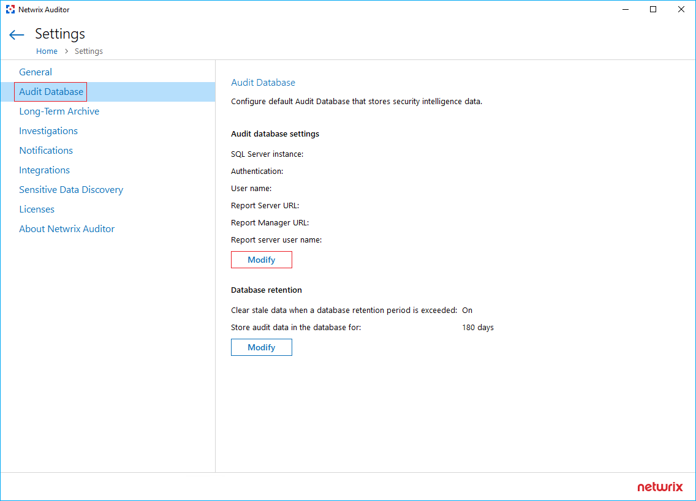

Question
How to set up SQL Server Reporting Services for the first time or during the Netwrix Auditor migration?
Answer
In case you are configuring SQL Server Reporting Services for the first time, grant the appropriate role permissions to the user. Refer to the following link for additional info: Requirements – SQL Server Reporting Services · v10.6. Launch the Report Server Configuration Manager and connect to the Report Server.
NOTE: In most cases, there is only one Report Server to be hosted locally on the same server as SQL.
Set Up Web Service URL and Web Portal URL
In your SQL server, run Report Server Configuration Manager. Select the SQL Server to connect to, and click Connect. Refer to the folowing steps to configure your Report Server instance:
-
In the left pane, select Web Service URL. Click Apply − this will initialize the Report Server URL.
NOTE: This action is required only during the initial setup.
-
In the left pane, select Web Portal URL. Click Apply − this will initialize the Report Manager URL.
NOTE: This action is required only during the initial setup.
Set Up Report Server Database
-
In the left pane of Report Server Configuration Manager, select Database. Click Change Database.
-
Check the Create a new report server database check and click Next.
-
In the Database Server tab, confirm the SQL Server instance and click Next.
NOTE: In case you are unable to proceed with the authentication type specified, make sure the user has the appropriate role permissions. If you need to review the SQL permissions, refer to the following link: SQL Server State-In-Time Reports · v10.6.
-
In the Database tab, you can use the default database name or change it. Click Next to proceed to the next setup stage.
-
In the Credentials tab, provide the credentials for the service account to connect to the Report Server database. You can also input credentials for any account with db_owner and db_creator roles. Click Next to proceed.
-
Review the summary and confirm the configuration by clicking Next.
Set Up Audit Database in Netwrix Auditor
Once the database has been successfully deployed, provide the Report Server URL and Report Manager URL in Netwrix Auditor settings.
-
In the main Netwrix Auditor screen, click Settings. In the left pane, select the Audit Database tab and click Modify under the Audit Database section.
 -
Input the credentials and click Next.
-
Input the Web Service URL in the Report Server URL field. Input the Web Portal URL in the Report Manager URL field. Click Finish to save changes.
Netwrix Auditor should now be able to process and generate reports.